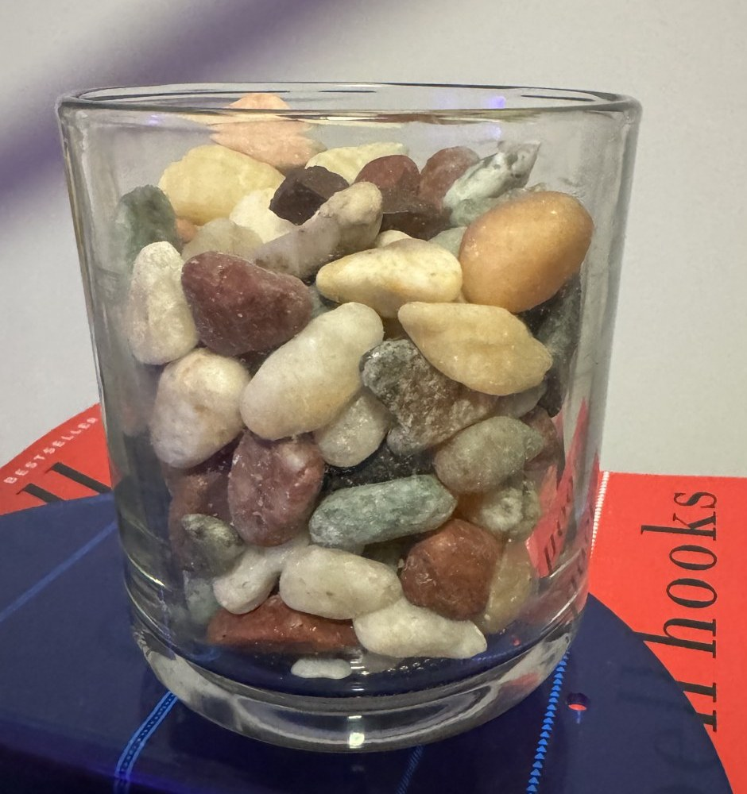
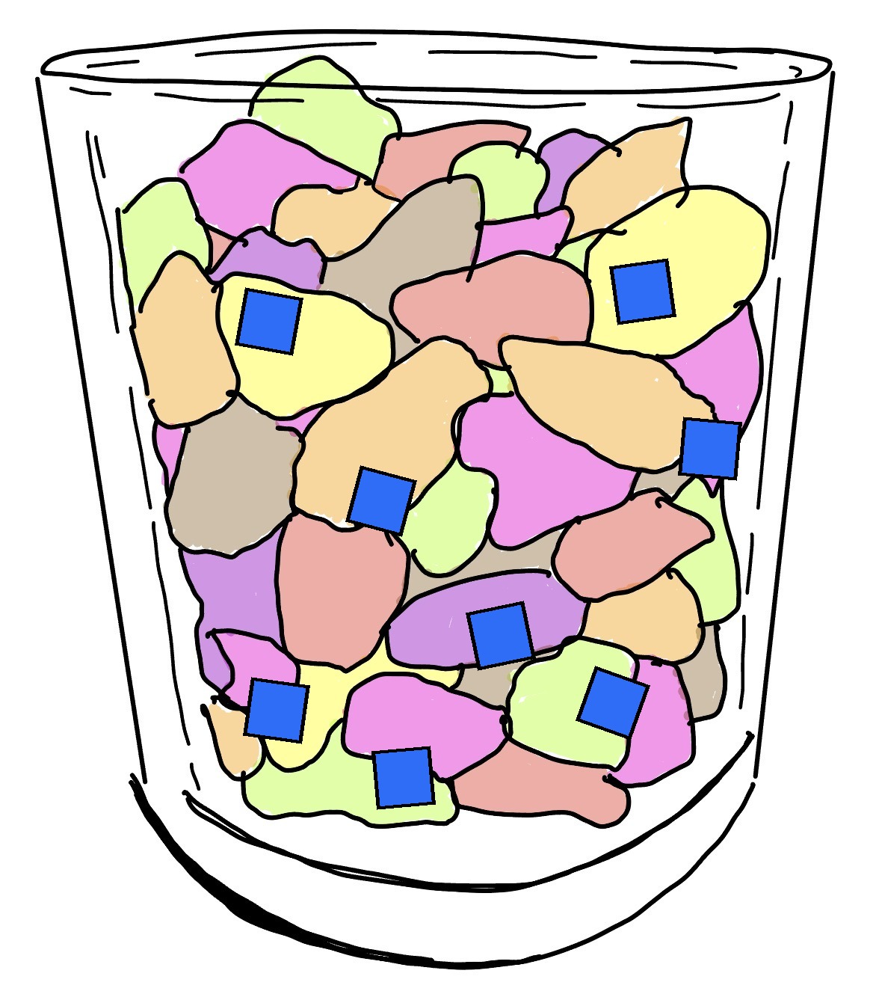
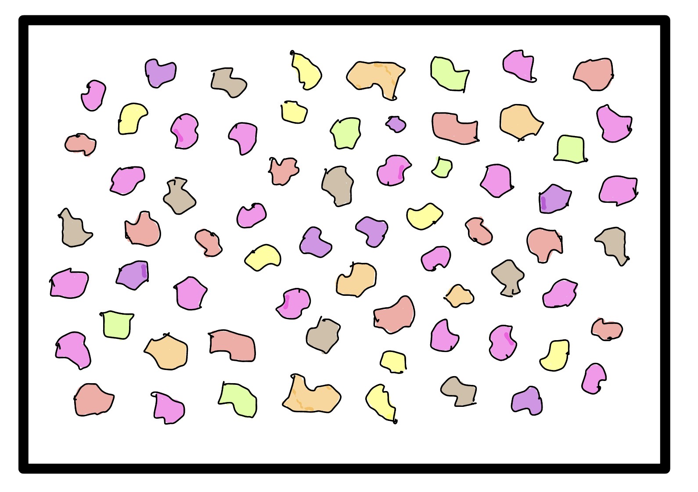
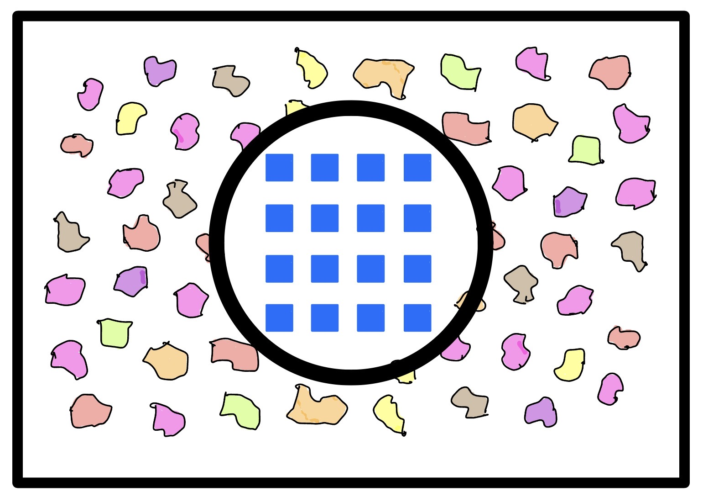
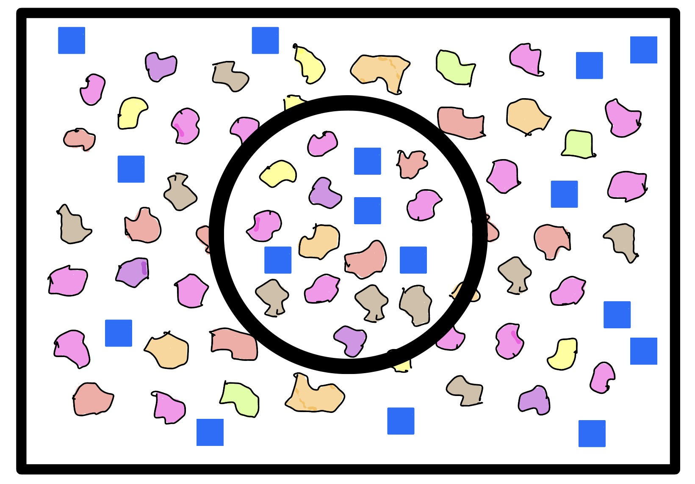
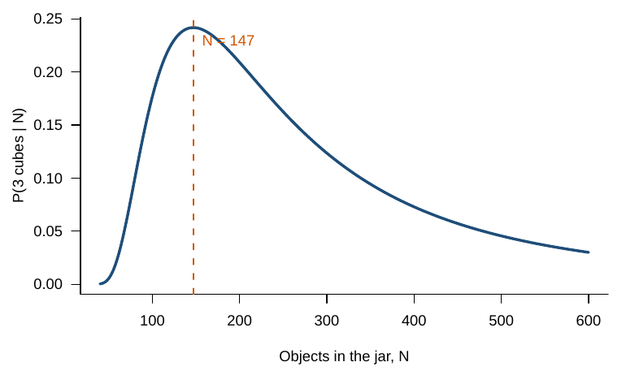

Chapter 3 The jar activity
3.1 Materials
- A clear jar with \(N = 126\) objects. Count the objects once in advance and keep the number secret.
- 21 blue plastic cubes used as tags.
- A tray or box with a red circle taped on the bottom. The circle is the sample.
- A whiteboard to record \(M\), \(n\), and \(k\).


Figure 3.1: The jar (left) and a drawing of the jar with blue cubes mixed in (right).
3.2 Protocol
- First toss. Spread the whole jar across the tray.
- Tag. Swap every pebble inside the circle for a blue cube. The number of swaps is \(M\). Swapping keeps the total \(N\) unchanged.
- Mix. Pour everything back into the jar and mix well.
- Second toss. Toss again. Inside the circle, count all objects (\(n\)) and the cubes among them (\(k\)).
- Estimate \(N\) (Section 3.4).
- Repeat steps 3 to 5 and record each run.



Figure 3.2: First toss, swap, and second toss.
3.3 The jar is a binomial experiment
| Jar | Binomial |
|---|---|
| Cubes swapped in | \(M\) |
| Objects in the circle on the second toss | \(n\) tries |
| Cubes in the circle | successes, \(X\) |
| Share of the jar that is cubes | \(p = M/N\) |
| Mixing the jar | independent tries |
| Cubes and pebbles equally likely to land in the circle | same \(p\) on every try |
3.4 The estimator
If the jar is well mixed, the share of cubes in the circle should be close to the share of cubes in the jar: \(k/n \approx M/N\). The binomial gives the same answer. The expected number of cubes in the circle is \(E(X) = nM/N\). Setting the expected count equal to the observed count \(k\) and solving for \(N\) gives the Lincoln-Petersen estimator: \[ \hat N = \frac{Mn}{k}. \]
Worked example. In run 3 at home, \(M = 21\), \(n = 21\), and \(k = 3\). Cubes are one seventh of the circle, so cubes should be about one seventh of the jar: \(\hat N = 21 \times 21 / 3 = 147\). Of all values of \(N\), 147 is also the value that makes 3 cubes most likely.

Figure 3.3: Probability of seeing 3 cubes among 21 objects, as a function of the number of objects in the jar.
The Lincoln-Petersen estimator is undefined when \(k = 0\). The Chapman estimator adds one to each count and subtracts one at the end: \[ \hat N_C = \frac{(M + 1)(n + 1)}{k + 1} - 1. \] For run 3, the Chapman estimator gives 120.